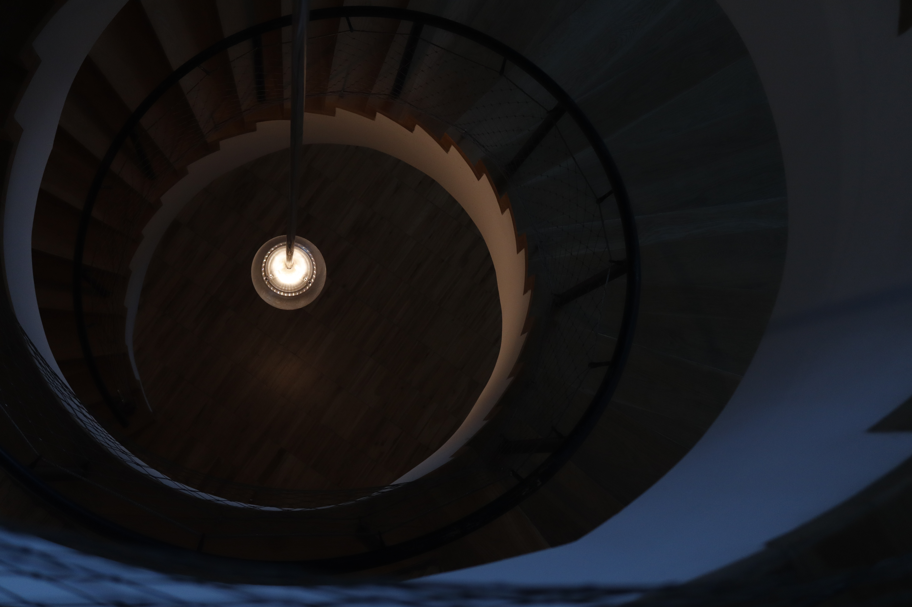
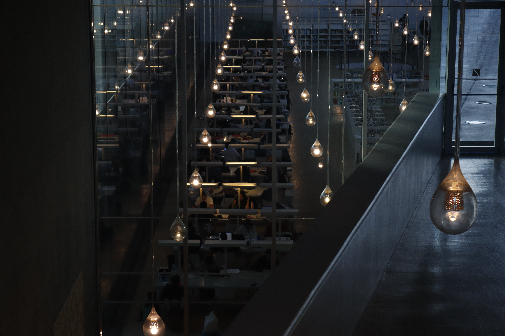
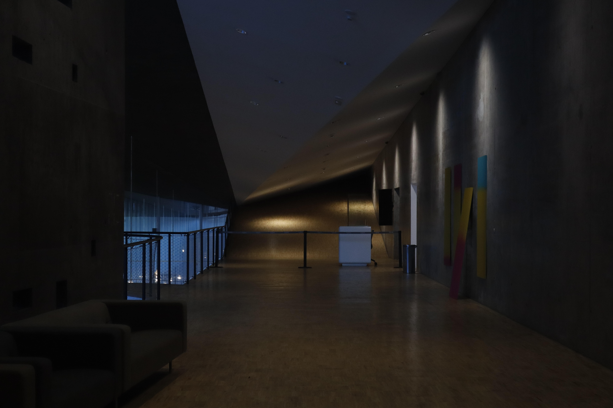
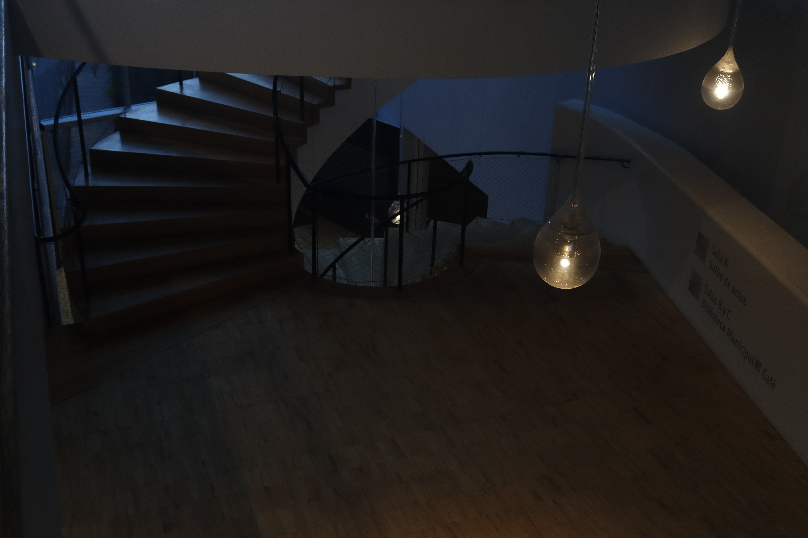

La luz esta en todos lados
La luz en el mundo de la fotografía es la base, de la misma manera que el ordenador para un informatico. Visto de una manera distinta los fotogramos alteramos como se va a ver todo lo que nos rodea para que sea mas bonito o mas miserable, tener el control y darle el cambio que tu quieras es por lo que la gente se enamora de esta profesion
Ver galería



